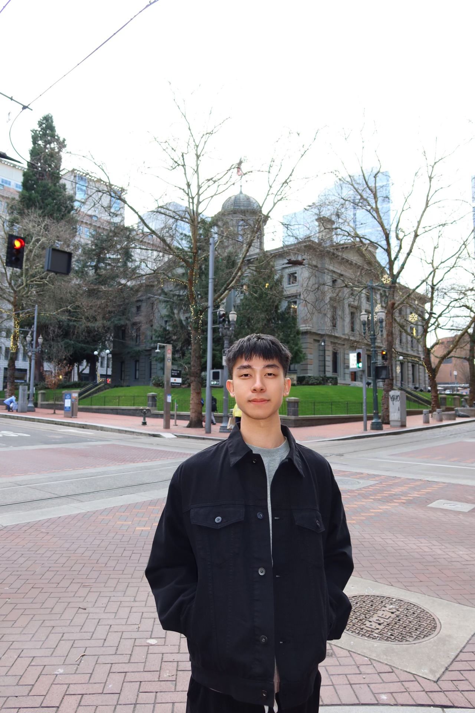

Meet the Team

Philip de Leon
- Figma Prototyping
- UI/UX
- Research

Andrew Frederick
- About Page HTML + CSS
- Figma Prototyping (Aboutpage and Color composition)
- Troubleshooting and Bug Fixing

Willy Hung
- Research and Development
- Data Collection and Cleaning
- Project Proposal

Philip Kleemann
- Created the interactive map
- Created the bar chart & legend
- Wrote the GitHub Readme

Said Mohammed
- Editing Documents
- Research
- Content Writing